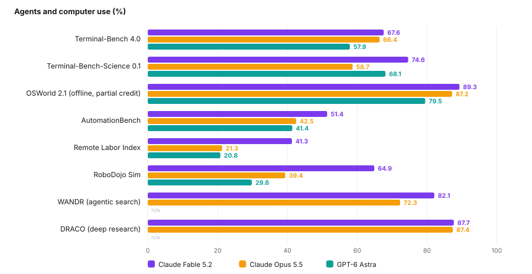
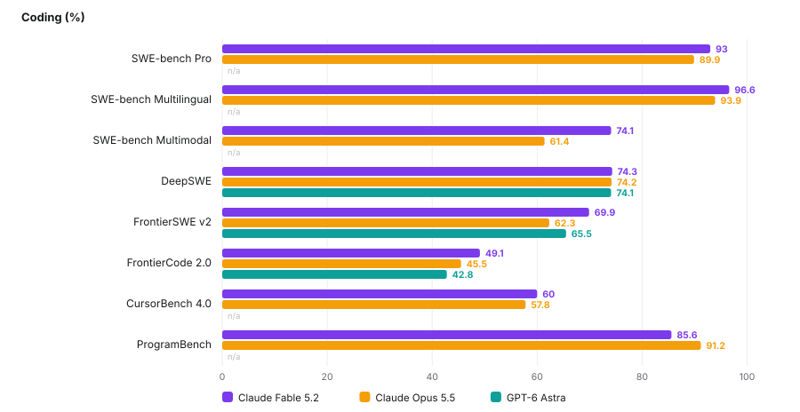
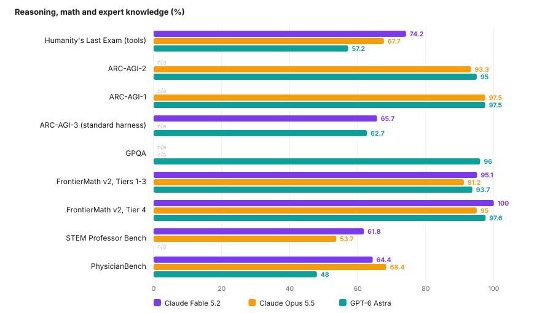
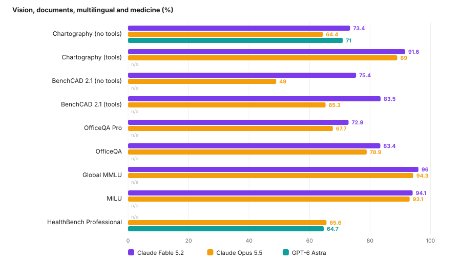
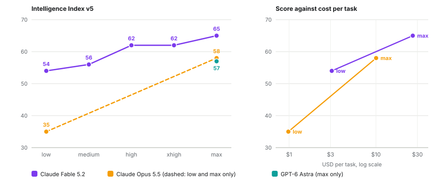
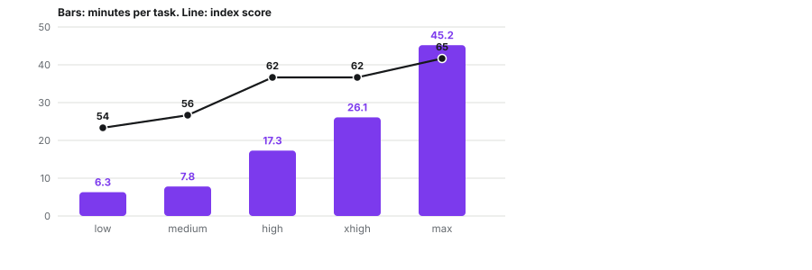
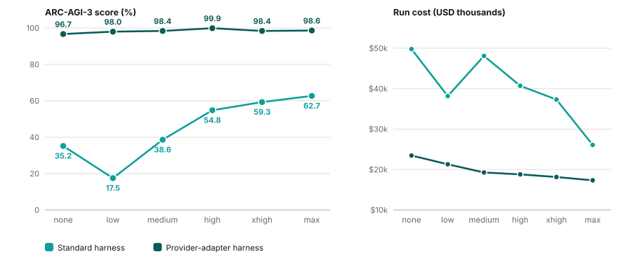
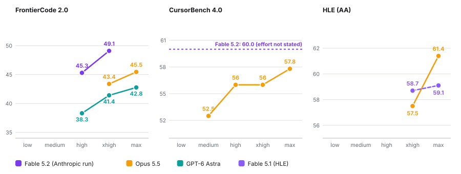
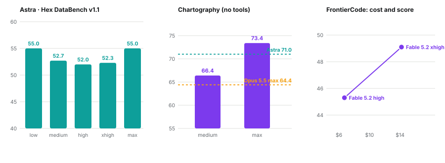

Benchmark atlas / 12 November 2026
Fable 5.2, Opus 5.5 and GPT-6 Astra, benchmark by benchmark
I took the benchmarks from my two survey lists and collected every published result for Claude Fable 5.2, Claude Opus 5.5 and GPT-6 Astra. Where at least two of them have a number, Fable 5.2 has the top score on 28 of 33, Opus 5.5 on 3 and Astra on 2. The effort data is much thinner than the head-to-head, because most labs publish only the maximum setting.
How to read the numbers
Most values are maximum-effort scores from the lab that ran the evaluation. A score moves with the harness, with partial against strict credit and with the index version, so where I found two values I show both. A dash means I found no published result, not that none exists.
Section oneWho leads, and by how much
Across the 33 benchmarks where at least two of the three models have a published number, Fable 5.2 holds the top score on 28. The margin is large on long-horizon and agentic work: on Remote Labor Index it scores 41.3 against 21.3 for Opus 5.5 and 20.8 for Astra, and on RoboDojo it scores 64.9 against 39.4 and 29.8. It is small on saturated math, where FrontierMath Tier 4 reads 100, 95 and 97.6. Opus 5.5 leads on PhysicianBench (68.4) and ProgramBench (91.2). Astra leads on ARC-AGI-2 (95 against 93.3).




Section twoWhat the effort setting buys
Fable 5.2 is the only one of the three with a published curve across all five settings, on the Artificial Analysis Intelligence Index. It climbs from 54 at low to 65 at max, but not evenly: low to high adds 8 points for about 11 more minutes per task, while high to max adds 3 points for about 28 more. High and xhigh tie at 62, so on this index xhigh buys time and not points. Opus 5.5 spans 35 at low to 58 at max; Artificial Analysis lists its medium, high and xhigh settings on the cost-quality frontier but does not give numbers for them. Astra is published at max only, at 57.


ARC-AGI-3
Astra has a full ladder here, and the harness matters more than the effort setting. Under the standard harness it improves steadily, from 17.5% at low to 62.7% at max, with the no-reasoning run at 35.2%. Under the provider-adapter harness every setting lands between 96.7% and 99.9%. In both, higher effort is cheaper per run, because fewer steps are wasted. For Fable 5.2 one source lists 65.7% (standard) and 94.9% (adapter), and another lists different stored rows, so I treat its ARC-AGI-3 figure as unsettled.

Coding, expert exams and data analysis
These ladders are short, and the harnesses differ: Opus 5.5 ran in Claude Code, Astra in Codex, and Fable 5.2's FrontierCode points come from Anthropic's own run. On FrontierCode 2.0, Opus 5.5 reaches 43.4 at xhigh and 45.5 at max; Astra 38.3, 41.4 and 42.8 from high to max; Fable 5.2 45.3 at high and 49.1 at xhigh, at $6.72 and $14.19 per task. On CursorBench 4.0, Opus 5.5 goes from 52.5 (medium) to 57.8 (max), flat at 56.0 across high and xhigh. On Humanity's Last Exam under Artificial Analysis's harness, Opus 5.5 jumps from 57.5 at xhigh to 61.4 at max while Fable 5.1 barely moves, 58.7 to 59.1.

Two more data points argue against assuming that more effort always helps. Astra on Hex DataBench v1.1 scores 55.0 at low and 55.0 at max, with a dip to 52.0 at high. On a 44-problem math study it scored 98.9% at medium and 97.7% at high, with overlapping 95% intervals. An arithmetic prompt was solved at every setting while output tokens grew from 546 to 1,422. Fable 5.2 on Chartography (no tools) gains from 66.4 at medium to 73.4 at max, against 64.4 for Opus 5.5 and 71.0 for Astra.

Section threeWhere sources disagree
The same benchmark often has two published numbers because of harness, partial against strict credit, index version, or an aggregator storing a different run. I keep both rather than choose. Several aggregator pages also cite documents that belong to other models, so I treat aggregator figures as claims until a primary page agrees. Opus 5.5's cyber figures were measured without safeguards; Fable 5.2 ships with them and falls back to a default model for certain requests, which affects tool-free comparisons.
| Benchmark | Value A | Value B |
|---|---|---|
| ARC-AGI-3, Fable 5.2 | 65.7 (standard) / 94.9 (adapter) | 79.26 / 97.72 (stored rows on one aggregator) |
| OSWorld 2.1, Fable 5.2 | 89.3 (offline, partial credit) | 54.6 (strict) |
| GDPval-AA, Opus 5.5 (Elo) | 1846 | 1866 |
| Terminal-Bench 4.0, Opus 5.5 | 66.4 (Anthropic, xhigh) | 59.6 (Artificial Analysis run) |
| AA-Briefcase Elo, Opus 5.5 | 1800 | 1822 |
| Terminal-Bench-Science, Astra | 68.1 (Anthropic table, benchmarklist) | 64.6 (BenchLM) / 62.86 (Vals) |
| AA Intelligence Index, Opus 5.5 | 58 (launch article) | 59 (v5 leaderboard page) |
Section fourCoverage
Every benchmark from my lists where at least one of the three models has a published number. A dash means none found. Bold marks the best value in the row, lower being better where noted.
| Benchmark | Fable 5.2 | Opus 5.5 | GPT-6 Astra |
|---|---|---|---|
| ARC-AGI-1 | - | 97.5 | 97.5 |
| ARC-AGI-2 | - | 93.3 | 95 |
| ARC-AGI-3 (standard) | 65.7 | - | 62.7 |
| ARC-AGI-3 (provider adapter) | 94.9 | - | 98.6 |
| Humanity's Last Exam (tools) | 74.2 | 67.7 | 57.2 |
| GPQA | - | - | 96 |
| FrontierMath v2 Tier 4 | 100 | 95 | 97.6 |
| FrontierMath Erdős (open problems) | - | - | 3 |
| BrowseComp | - | - | 91.5 |
| OSWorld 2.0 | - | 48.7 | 72.6 |
| OSWorld 2.1 | 89.3 | 87.2 | 79.5 |
| Terminal-Bench 4.0 | 67.6 | 66.4 | 57.9 |
| Terminal-Bench-Science | 74.6 | 58.7 | 68.1 |
| SWE-bench Pro | 93 | 89.9 | - |
| Remote Labor Index | 41.3 | 21.3 | 20.8 |
| GDPval-AA v2.1 (Elo) | - | 1846 | 1542 |
| Toolathlon-Verified | - | 77.8 | - |
| MRCR v2 256K-512K | - | - | 100 |
| MRCR v2 512K-1M | - | - | 96.3 |
| GraphWalks BFS 256K-1M | - | 66.8 | 71.8 |
| HealthBench Hard | - | - | 36.6 |
| Global-MMLU | 96 | 94.3 | - |
| NYT Connections | 97.3 | - | - |
| Chess puzzles (Epoch) | 79 | - | - |
| MathVis (Fable 5, not 5.2) | 26.56 | - | 31.25 |
| ExploitGym | - | 33.3 | 42.4 |
| CritPt v2 hard subset (AA) | 77 | - | 72 |
| SciCode (AA) | - | 66.9 | - |
| Gray Swan IPI, lower is better | - | 1 | 8.5 |
| Vending-Bench 2 (final $) | - | - | $15,515 |
| SpireClimb | 19.6 | - | - |
Section fiveThe catalog
270 benchmarks from the mainstream sweep and from the esoteric pass. 61 have a score on a page I could read; 209 are listed without one. The model shown is the latest or top-ranked model I found a number for, which is not necessarily the newest model in existence: a leaderboard shows its leader, and many pages were undated or unreachable. Benchmarks with no result are collected under each heading, and that means I found none, not that none exists.
Aggregators7 / 19
| Benchmark | Latest or top model found | Score | Note |
|---|---|---|---|
| Artificial Analysis Intelligence Index | Claude Fable 5.2 (max) | 65 | v5; Opus 5.5 59, Astra 57 |
| Epoch Capabilities Index (ECI) | Claude Fable 5.2 | 174 | |
| Epoch Benchmarking Hub | Claude Fable 5.2 | ECI 174 | see ECI |
| FrontierMath (Tiers 1-4, v2) | Claude Fable 5.2 | T1-3 95.1% · T4 100.0% | BenchLM; Astra 93.7 / 97.6 |
| LiveBench | gpt-5.5-xhigh | 81.28 | snapshot 2026-06-10; Fable 5 xhigh 78.57 |
| Scale SEAL | Claude Fable 5.2 | 41.3% (Remote Labor Index) | |
| Vals AI (Vals Index) | Claude Fable 5.2 (High) | 71.31% | 1st of 36; Astra 65.02 |
No result found: LMArena; OpenCompass; BenchLM; BenchmarkList; Codesota; llm-stats; HELM; Open LLM Leaderboard v2; BFCL; OpenRouter rankings; AIMultiple 200+; Snorkel Open Benchmarks Grants
Knowledge & reasoning7 / 11
| Benchmark | Latest or top model found | Score | Note |
|---|---|---|---|
| MMLU-Pro | Sakana Namazu | 90.33% | sampled 2026-08-11; Opus 4.5 89.5 |
| GPQA Diamond | GPT-6 Astra | 96.0% | BenchLM |
| Humanity's Last Exam | Claude Fable 5.2 | 74.2% (with tools) | Opus 5.5 67.7, Astra 57.2 |
| CritPt | Claude Fable 5.2 | 77% (v2 hard subset) | AA; Astra 72% |
| ARC-AGI-1 | Opus 5.5 / GPT-6 Astra | 97.5% | tie |
| ARC-AGI-2 | GPT-6 Astra (Max) | 95% | Opus 5.5 (High) 93.33 |
| ARC-AGI-3 | GPT-6 Astra | 99.9% adapter · 62.7% standard | harness-dependent |
No result found: MMLU; HLE-Diamond (AA); FrontierScience; SimpleBench
Math2 / 11
| Benchmark | Latest or top model found | Score | Note |
|---|---|---|---|
| AIME 2025 | GPT-5.2 (xhigh) | 99% | snapshot 2026-06-10; saturated |
| ArXivMath (Aug 2026) | Claude Opus 5.5 | 96.9% tools · 91.2% no tools | Fable 5.1 92.1 / 82.9 |
No result found: HMMT; MATH-500; GSM8K; USAMO 2026; IMO-ProofBench / AnswerBench; Putnam-Bench; OlympiadBench; ProofBench; MathArena
Coding9 / 17
| Benchmark | Latest or top model found | Score | Note |
|---|---|---|---|
| SWE-bench Pro | Claude Fable 5.2 (max) | 93.0% | Opus 5.5 89.9 |
| SWE-bench Multilingual | Claude Fable 5.2 | 96.6% | |
| SWE-bench Multimodal | Claude Fable 5.2 | 74.1% | |
| Terminal-Bench 4.0 | Claude Fable 5.2 (max) | 67.6% | Opus 5.5 66.4, Astra 57.9 |
| SciCode | Claude Opus 5.5 (max) | 66.9% | AA v4.3 |
| CursorBench 4.0 | Claude Fable 5.2 | 60.0% | Opus 5.5 57.8 (max) |
| FrontierCode 2.0 | Claude Fable 5.2 (xhigh) | 49.1% | leaderboard best: Opus 5.5 max 45.45 |
| FrontierSWE v2 | Claude Fable 5.2 | 69.9% | |
| DeepSWE | Claude Fable 5.2 | 74.3% | Opus 74.2, Astra 74.1 |
No result found: SWE-bench Verified; Terminal-Bench 2.1 (Vals); LiveCodeBench; Aider Polyglot; HumanEval; SWE-Lancer; MLE-bench; CRUXEval
Agents & computer use10 / 16
| Benchmark | Latest or top model found | Score | Note |
|---|---|---|---|
| OSWorld (Verified) | Pointer Agent w/ Opus 4.7 | 83.64% | sampled 2026-05-27 |
| OSWorld 2.0 | GPT-6 Astra | 72.6% | BenchLM |
| OSWorld 2.1 | Claude Fable 5.2 | 89.3% (offline, partial) | Opus 5.5 87.2, Astra 79.5 |
| Toolathlon | Claude Opus 5.5 | 77.8% (Verified) | |
| GDPval-AA | Claude Opus 5.5 (max) | 1846 Elo | Astra 1542; Fable 5.2 1831 in one source |
| Remote Labor Index | Claude Fable 5.2 (high) | 41.3% | Opus 21.3, Astra 20.8 |
| Vending-Bench 2 | GPT-6 Astra | $15,515 final | sampled 2026-10-03 |
| BrowseComp | Nex-N2.5-Max | 92.6% | Astra 91.5; latest entry Inkling 2 Small 90.2 |
| DRACO | Claude Fable 5.2 | 87.7% | |
| AutomationBench | Claude Fable 5.2 | 51.4% | Opus 5.5 42.5, Astra 41.4 |
No result found: WebArena; tau-bench / tau2-bench; Agents' Last Exam; GAIA; MedBrowseComp; PaperBench
Long context2 / 12
| Benchmark | Latest or top model found | Score | Note |
|---|---|---|---|
| MRCR v2 (8-needle) | GPT-6 Astra | 100% @256K-512K · 96.3% @512K-1M | BenchLM |
| Graphwalks | GPT-6 Astra | 71.8% (BFS 256K-1M) | Opus 5.5 66.8 |
No result found: OpenAI-MRCR; RULER; NIAH / NIAH-2; LongBench v1/v2; NoLiMa; BABILong; AA-LCR; HELMET; NoCha; Michelangelo
Factuality2 / 10
| Benchmark | Latest or top model found | Score | Note |
|---|---|---|---|
| SimpleQA | Gemini 3.1 Pro (high) | 77.3% | Fable 5 (max) 68.3; snapshot 2026-07-15 |
| AA-Omniscience | Claude Opus 5.5 (max) | 48 (v1.1 index) | AA v5 |
No result found: SimpleQA Verified; FACTS; Vectara HHEM; HalluHard; PersonQA; TruthfulQA; FActScore; LongFact
Instruction & chat1 / 10
| Benchmark | Latest or top model found | Score | Note |
|---|---|---|---|
| IFEval | Kimi-K2.6 | 94.5 | self-reported, 2026-06-08 |
No result found: IFBench; Multi-IF; MT-Bench; Arena-Hard; AlpacaEval; WildBench; EQ-Bench; WritingBench; RewardBench
Medicine3 / 11
| Benchmark | Latest or top model found | Score | Note |
|---|---|---|---|
| HealthBench | Claude Opus 5.5 | 68.1% raw | Astra 56.9 |
| HealthBench Hard | GPT-6 Astra | 36.6% | |
| HealthBench Professional | Claude Opus 5.5 | 65.6% | Astra 64.7 |
No result found: MedQA; MedMCQA; PubMedQA; MedXpertQA; MedHELM; MEDEC; MedVH; CREOLA
Law, finance, science1 / 17
| Benchmark | Latest or top model found | Score | Note |
|---|---|---|---|
| Terminal-Bench-Science | Claude Fable 5.2 | 74.6% | Opus 5.5 58.7, Astra 68.1 |
No result found: LegalBench; LawBench; LexEval; CaseLaw v2; Legal Research Bench; HLAB; FinanceBench; Finance Agent v2; EMB; CorpFin; TaxEval; Tax Agent Bench; LAB-Bench; ScienceAgentBench; HLE-Physics; CMT-Benchmark
Multilingual1 / 10
| Benchmark | Latest or top model found | Score | Note |
|---|---|---|---|
| Global-MMLU | Claude Fable 5.2 | 96.0% | Lite/full not distinguished |
No result found: MMLU-ProX; INCLUDE; MGSM; Belebele; AfriMMLU / AfriXNLI; MuBench; MultiLoKo; BenchMax; FLORES-200
Multimodal0 / 13
No result found: MMMU / MMMU-Pro; MathVista; ChartQA; DocVQA; RealWorldQA; OCRBench; ScreenSpot-Pro; Video-MME / v2; MLVU; LVBench; MMVU; EgoSchema; VideoMMMU
Generative media0 / 11
No result found: Image arenas (LMArena); GenEval; GenAI-Bench / GenAI-Arena; HEIM; T2I-CompBench; Imagine-Bench; EditScore; Gen-Arena; VBench; EvalCrafter; VideoGen-Reward
Speech & embeddings0 / 7
No result found: Open ASR Leaderboard; FFASR / ESB / LibriSpeech / FLEURS; Seed-TTS; Real World VoiceEQ; MMAU / MMAR; MTEB / MMTEB / MIEB; MAEB / MAEB+
Robotics1 / 6
| Benchmark | Latest or top model found | Score | Note |
|---|---|---|---|
| RoboDojo Sim | Claude Fable 5.2 | 64.9% | Opus 5.5 39.4; Astra 29.8 |
No result found: LIBERO (+Plus/-X/-PRO/-PeRM); CALVIN; SimplerEnv; vla-eval harness; NativeEmbodied
Autonomy & cyber3 / 15
| Benchmark | Latest or top model found | Score | Note |
|---|---|---|---|
| ExploitGym | GPT-6 Astra | 42.4% | Opus 5.5 33.3 |
| ExploitBench (V8) | GPT-6 Astra | 100% | secondary report |
| CVE Rediscovery | Claude Mythos 5.2 | 89.6% | Opus 5.5 81.3 |
No result found: METR time horizons (HCAST, RE-Bench, SWAA); MirrorCode / expenditure horizon; RE-Bench; Cybench; NYU CTF; CVE-Bench; BountyBench; CyberGym; AISI cyber ranges; CAIBench; SEC-bench; BaxBench
Safety & alignment1 / 15
| Benchmark | Latest or top model found | Score | Note |
|---|---|---|---|
| Gray Swan IPI | GPT-6 Astra | 8.5% (15 attempts) | Opus 5.5 1.0%; lower is better |
No result found: HarmBench; JailbreakBench; StrongREJECT; AILuminate; AIR-Bench; AgentHarm; WMDP / BioLP-Bench / VCT; XSTest; AgentDojo; MASK; Apollo scheming suite / Bloom / Petri; SycEval; MACHIAVELLI; BIG-Bench HHH
Ancient scripts1 / 7
| Benchmark | Latest or top model found | Score | Note |
|---|---|---|---|
| TokenAI Hieroglyphic AI Benchmark | TokenAI model | ~90% overall | vendor-reported |
No result found: Hemauer Egyptian/Luwian evaluation; Reasoning Over the Glyphs; Ancient logographic benchmark (EGY/AKK/ZHO/Linear A); HieroLM; Dongba pictogram study; Falsifiability Sheet pilot
Linguistics puzzles0 / 5
No result found: LingOly; Linguini; IOLBench / LOBSTER / LingBench++; PuzzLing Machines / modeLing; Rosetta-to-Match-Up corpus
Esoteric code1 / 1
| Benchmark | Latest or top model found | Score | Note |
|---|---|---|---|
| EsoLang-Bench | GPT-5.2 | 3.8% best | vs 100% Python; 0-11% overall |
Games3 / 5
| Benchmark | Latest or top model found | Score | Note |
|---|---|---|---|
| BALROG | Gemini 3 | 29.5% progress | sampled 2026-05-29; NetHack 1.6% |
| Kaggle Game Arena (chess) | Gemini 3 Pro Preview | Elo 1325 | Gemini 3 Flash 1297 |
| InfiniteBM Chess | Claude Opus 4.7 | Elo 1997.5 | only 16 games |
No result found: Kaggle Game Arena (poker / Werewolf); Pokemon Agent Challenge
Social & theory of mind0 / 5
No result found: Werewolf Arena / WOLF / Triadic Werewolf; MafiaScope / MIVA; Decrypto / Avalon-ToM-Bench; SOTOPIA / Hi-ToM / FANToM / ToMi; MACHIAVELLI
Open math & proofs1 / 8
| Benchmark | Latest or top model found | Score | Note |
|---|---|---|---|
| FrontierMath Erdős | GPT-6 Astra | 3% | 68 open problems, fixed budget |
No result found: FrontierMath: Open Problems / HorizonMath; Formal Conjectures; miniF2F; PutnamBench; ProverBench; ProofNet / CombiBench / FormalMATH; FormalProofBench / SorryDB
Puzzles3 / 5
| Benchmark | Latest or top model found | Score | Note |
|---|---|---|---|
| NYT Connections | Claude Fable 5.2 | 97.3% | |
| Sudoku-Bench | <15% best | no-tool runs, older models | |
| InsanityBench | ~10% best | at time of posting |
No result found: Cryptic crosswords / puzzlehunts / PuzzlePlex; Riddles / lateral thinking sets
Spatial & physical0 / 5
No result found: BuildArena; GRASP / FloorplanQA / SPhyR; 3DSRBench / OpenBench / SpatialEval; GeoBench (GeoGuessr); PHYRE / Physion / IntPhys / CLEVRER / PIQA
Niche science0 / 3
No result found: PG-LLM (protein variants); ChemBench; SciKnowEval / SFE / SDE
Tokenization quirks0 / 2
No result found: CharBench; TASE / Strawberry Problem set
Humor, creativity, music0 / 4
No result found: Oogiri-Master; LoTbench; MusiXQA / ABC-Eval; Pelican on a bicycle
Behavior & wellbeing2 / 5
| Benchmark | Latest or top model found | Score | Note |
|---|---|---|---|
| Spiral-Bench | GPT-5 | 87 | DeepSeek-R1-0528 22.4 |
| SAD (situational awareness) | Claude 3.5 Sonnet | 54% | 2024 result |
No result found: DelusionEval; ELEPHANT / SnitchBench; Model-welfare self-report work
Ethics & values0 / 2
No result found: TrolleyBench / MoralBench / MOSAIC; MultiTP / GlobalOpinionQA / PRISM / ETHICS
Forecasting0 / 2
No result found: Prophet Arena; Prediction Arena / ForecastBench / ForecastQA
Sources
Primary data. Anthropic announcement pages and the Claude Opus 5.5 system card; OpenAI's GPT-6 Astra materials; Artificial Analysis (Intelligence Index v5 and its effort breakdowns); ARC Prize results; Epoch AI (ECI, FrontierMath); Vals AI; Hex's DataBench write-up; BenchLM comparison pages and benchmarklist.com leaderboards for per-benchmark scores.
What I verified. Every figure was read from a page I could open, and nothing is estimated or interpolated. Where two sources disagree both values appear.
What I could not verify. Per-effort data exists for very few model and benchmark pairs, so most effort ladders here have two to four points. Several aggregator figures have no primary page behind them. Many official leaderboards render client-side and returned nothing, so those benchmarks show no result in the catalog.